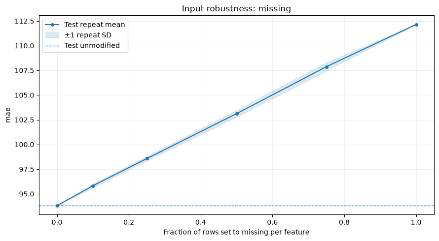

Input robustness¶
RobustnessCurve measures task metrics after explicit changes to held-out
features. Use it to assess missing inputs, measurement noise, reduced precision,
or categories absent from the supplied data. The fitted model is reused at every
level; its parameters and the original data stay unchanged.
Add a stress report to training¶
The example uses the original UCI Bike Sharing hourly observations, weather
features, and rental counts. Cache the source first with
python -m examples.prepare_data --dataset bike. It fits on earlier hours and
reserves 2012 as test; the report applies the configured scenario only to held-out
rows and keeps the task's weighted MAE and original target values.
from examples.custom_metric import weighted_mae
from examples.training_setup import prepare_training
from ml_toolkit import train_model
from ml_toolkit.model_evaluation import RobustnessCurve
from ml_toolkit.models import CatBoostRegressionModel
from ml_toolkit.training import Holdout
data, params, config = prepare_training()
result = train_model(
splitter=Holdout(data, test_size="2012-01-01"),
params=params,
model_factory=CatBoostRegressionModel,
metric=weighted_mae,
run_name="bike-input-robustness",
config=config,
model_evaluators=RobustnessCurve(
features=("temperature", "humidity"),
mode="missing",
levels=(0.0, 0.1, 0.25, 0.5),
n_repeats=3,
seed=42,
),
)
assert result.test_metrics is not None
Each enabled validation/test fit exports robustness/metrics.parquet and one
indexed figure per metric, such as robustness/000_mae.png. The shared
ReportingConfig stage switches and FigureConfig apply. A train-only final
fit skips this report. Use distinct report names for several scenarios.
Calculate and plot a scenario directly¶
This fixed model fits 80 iterations on 2011 hours and reports on 2012 hours. The stress scenario independently hides temperature and humidity at each chosen fraction. The resulting points describe this explicit scenario applied to the real held-out rows, rather than a forecast of how the input source will fail.
from pathlib import Path
from examples.evaluation_data import fit_bike_evaluation
from ml_toolkit.plots.robustness import robustness_curve
example = fit_bike_evaluation()
output = Path("plots")
output.mkdir(exist_ok=True)
report = RobustnessCurve(
features=("temperature", "humidity"),
mode="missing",
levels=(0.0, 0.1, 0.25, 0.5, 0.75, 1.0),
n_repeats=5,
max_samples=2500,
seed=42,
)
table = report.calculate(
model=example.model,
metric=weighted_mae,
data=example.data,
split=example.split,
)
table.write_parquet(output / "robustness-metrics.parquet")
robustness_curve(table, metric="mae", save_fig=output / "robustness-missing.png")
assert table.height == 31
assert table["n_rows"].unique().to_list() == [2500]

The vertical axis is MAE in rentals per hour. The dashed line uses unmodified features on the same 2,500 sampled hours as every scenario. The solid line is the mean over five random realizations, and the band is one repeat standard deviation. It shows variability of the chosen perturbation, rather than an uncertainty interval for future model quality. Undefined metric values leave gaps.
Scenario settings¶
| Mode | Meaning of levels |
Supported features |
|---|---|---|
missing |
Probability in [0, 1] of setting each selected feature value to null | Any model feature |
noise |
Nonnegative Gaussian-noise scale, in training standard deviations | Numerical model features |
rounding |
Nonnegative integer decimal places; fewer means coarser precision | Numerical model features |
unknown |
Probability in [0, 1] of replacing a category with unknown_value |
Categorical model features |
Levels are unique and finite. Masks/noise are reused across levels within each
repeat, so larger missing fractions hide nested row sets. n_repeats defaults
to three; deterministic rounding is evaluated once per level. max_samples
defaults to 10,000 uniformly sampled positive-weight held-out rows; None uses
all positive-weight held-out rows. Zero-weight rows are excluded before sampling
and perturbation. An all-zero held-out sample raises an error. Row selection
occurs once, and targets, weights, dates, IDs, and auxiliary columns remain
aligned throughout. seed controls both row selection and perturbations.
Noise uses the weighted population standard deviation of finite, positive-weight training values. It therefore requires train rows even for direct calculation. Constant features have zero noise scale; nulls remain null. Rounding and noise may promote changed numerical columns to Float64.
noise = RobustnessCurve(
features=("temperature",), mode="noise", levels=(0.0, 0.25, 0.5, 1.0),
n_repeats=3, max_samples=2500, seed=42,
)
rounding = RobustnessCurve(
features=("humidity",), mode="rounding", levels=(0.0, 1.0, 2.0),
max_samples=2500,
)
for scenario in (noise, rounding):
scenario_table = scenario.calculate(
model=example.model, metric=weighted_mae,
data=example.data, split=example.split,
)
assert scenario_table["metric"].unique().to_list() == ["mae"]
Unknown mode injects an unseen label, defaulting to "unknown". The label must
not already occur in any supplied value of the selected features. Changed
categorical columns are converted to String in the temporary input only,
including Enum/Categorical and integer-coded categories. Their categorical
feature metadata is preserved. CatBoost can predict unseen labels; LightGBM's
categorical preparation uses its missing-category behavior for unseen values.
Custom adapters must support the chosen scenario through predict_pool.
The following example explicitly treats the recorded weather code as a categorical feature before fitting a separate model:
from dataclasses import replace
import numpy as np
categorical_data = replace(
example.data,
cat_features=("weather",),
numerical_features=tuple(name for name in example.data.X.columns if name != "weather"),
)
categorical_model = CatBoostRegressionModel({
"iterations": 40, "depth": 4, "random_seed": 42, "thread_count": 2,
"verbose": False, "allow_writing_files": False,
}).fit(categorical_data.take(np.flatnonzero((example.split == "train").to_numpy())))
unknown = RobustnessCurve(
features=("weather",), mode="unknown", levels=(0.0, 0.1, 0.5, 1.0),
unknown_value="unknown", n_repeats=3, max_samples=2500, seed=42,
)
unknown_table = unknown.calculate(
model=categorical_model, metric=weighted_mae,
data=categorical_data, split=example.split,
)
assert unknown_table.height == 13
Calculated values¶
calculate returns a Polars table containing split, mode, level, repeat,
is_baseline, metric, value, delta, n_rows, and sum_weight. n_rows
counts the selected positive-weight held-out rows. Baseline
rows have null level/repeat and is_baseline=True. Other rows identify the
scenario level and zero-based repeat. Values use natural metric units and
the original row weights; delta is scenario value minus baseline. Positive
delta worsens a minimized metric and improves a maximized metric. Nonfinite
scores and deltas become null, while prediction/metric exceptions propagate
with scenario context.
Reports calculate the curve once during artifact generation and do not add
scalar scores to training results or tuning objectives. parameters() returns
the settings, and evaluator instances retain no fitted state.
API reference¶
RobustnessCurve
dataclass
¶
RobustnessCurve(
*,
name: str = "robustness",
features: tuple[str, ...],
mode: Literal[
"missing", "noise", "rounding", "unknown"
] = "missing",
levels: tuple[float, ...] = (0.05, 0.1, 0.2, 0.4),
n_repeats: int = 3,
max_samples: int | None = 10000,
seed: int = 0,
unknown_value: str = "unknown"
)
Bases: ModelEvaluator
Measure task metrics after controlled changes to held-out features.
Parameters:
| Name | Type | Description | Default |
|---|---|---|---|
features
|
tuple of str
|
Nonempty, unique feature names from Pool.X, changed together. Auxiliary columns are never passed to the model or changed by this report. |
required |
mode
|
(missing, noise, rounding, unknown)
|
Missing injects nulls. Unknown injects unknown_value only in categorical model columns, converting those changed columns to String locally. Noise adds independent Gaussian noise to numerical features, scaled by each feature's weighted population standard deviation on train rows. Rounding rounds numerical features to the requested decimal places. |
'missing'
|
levels
|
tuple of float
|
Unique, finite scenario levels. Missing/unknown use fractions in [0, 1]. Noise uses nonnegative standard-deviation multipliers. Rounding uses nonnegative integer decimal places, with smaller values coarser. |
(0.05, 0.1, 0.2, 0.4)
|
n_repeats
|
int
|
Positive number of random realizations per level. Rounding is deterministic and is calculated once per level. |
3
|
max_samples
|
int or None
|
Positive maximum number of uniformly sampled positive-weight held-out rows. Zero-weight rows are excluded before sampling. Sampling occurs once and retains the same rows, targets and weights at all levels. None evaluates all positive-weight held-out rows. |
10000
|
seed
|
int
|
Nonnegative seed for row sampling and perturbations. Each realization shares masks/noise across levels so fractions form nested row sets. |
0
|
unknown_value
|
str
|
Unseen label used by unknown mode. Must not occur in any supplied value of a selected feature. The same label is used for all selected features. |
'unknown'
|
name
|
str
|
Unique report name and artifact namespace. |
'robustness'
|
Notes
Evaluates the fitted adapter without refitting or mutating inputs. Requires val or test rows; train-only inputs return an empty table and no artifacts. Noise additionally requires train rows to estimate its scale, excluding zero-weight, null and nonfinite feature values. A constant feature has zero noise scale. Changed numerical columns may be promoted to Float64.
Every named score from the supplied task metric is evaluated with the original held-out targets and row weights. Nonfinite scores become nulls. The unmodified baseline is a separate row with level/repeat=null and is_baseline=True; delta is changed score minus baseline in natural units. A positive delta improves a maximized metric and worsens a minimized one.
calculate ¶
calculate(
*,
model: Model | ShrinkableModel,
metric: Metric,
data: Pool,
split: Series
) -> pl.DataFrame
Return baseline and repeated scenario scores in a typed long table.
Parameters:
| Name | Type | Description | Default |
|---|---|---|---|
model
|
fitted prediction adapter
|
Supplies predict_pool and preserves its own learned preprocessing. |
required |
metric
|
Metric
|
Task callback accepting target, prediction and original row weights. |
required |
data
|
Pool
|
Aligned train and optional single held-out sample, or held-out only. |
required |
split
|
Series
|
Aligned non-null String labels containing train, val or test. |
required |
Returns:
| Type | Description |
|---|---|
DataFrame
|
Columns split, mode, nullable level/repeat, is_baseline, metric, nullable value/delta, n_rows, and sum_weight. A baseline uses the same sampled positive-weight held-out rows as every scenario. n_rows counts those rows; zero-weight rows are excluded. Empty for train-only. All-zero held-out weights raise ValueError. |
robustness_curve ¶
robustness_curve(
table: DataFrame,
*,
metric: str,
save_fig: str | Path,
figure: FigureConfig | None = None
) -> None
Plot repeated scenario scores and the unmodified held-out baseline.
Parameters:
| Name | Type | Description | Default |
|---|---|---|---|
table
|
DataFrame
|
Long table from RobustnessCurve.calculate, containing mode, level, is_baseline, metric and nullable value columns. |
required |
metric
|
str
|
Metric name to draw in its natural units. |
required |
save_fig
|
str or Path
|
Destination file. Parent directories are created. |
required |
figure
|
FigureConfig or None
|
Shared export dimensions, resolution and file format. |
None
|
Notes
Curves show the mean across finite repeats, with one standard deviation shaded. A horizontal line marks the baseline. Undefined levels leave gaps. The figure is closed after saving or failure.